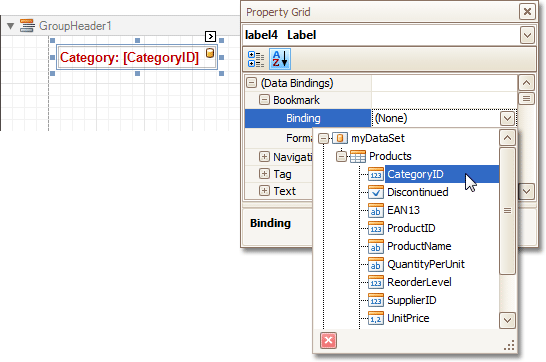
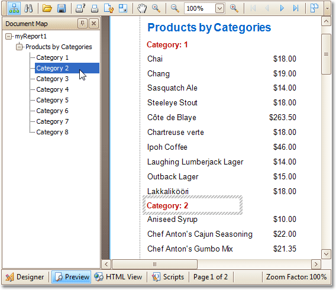

Add Bookmarks
This tutorial describes the steps to create a report with bookmarks (a so-called Document Map). This feature allows you to easily navigate through the report during print preview.
To demonstrate the Document Map feature, we'll use a report with grouping, similar the one created in the following tutorial: Change or Apply Data Grouping to a Report.
To create a report with bookmarks, do the following.
Click the Label in the Report Header band, to select it, and in the Property Grid, set its Bookmark property to the same value as its text (i.e. Products by Categories).

Now, select the Label in the report's Group Header band. As this control is bound to data, we will bind its Bookmark property to the same data field, using the (Data Bindings) property.

Note that as with other bindable properties, you also can apply value formatting to the Bookmark property (e.g. Category {0}).
Then, for this Label, specify its Bookmark, and set the Parent Bookmark property to the Report Header's label, to define the document map's hierarchy.

The report with bookmarks is now ready. Switch to the Preview Tab, and view the result.
